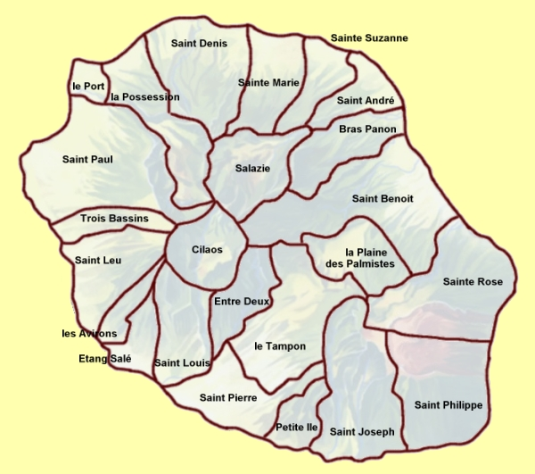

La Réunion compte 24 communes. Ces communes ont plutot une taille comparable à celle d'un canton dans la campagne de France métropolitaine et le nombre de villages regroupés autour de cette commune est important. Cette carte ne présente que les limites des 24 communes avec la ville qui donne son nom à la commune.
